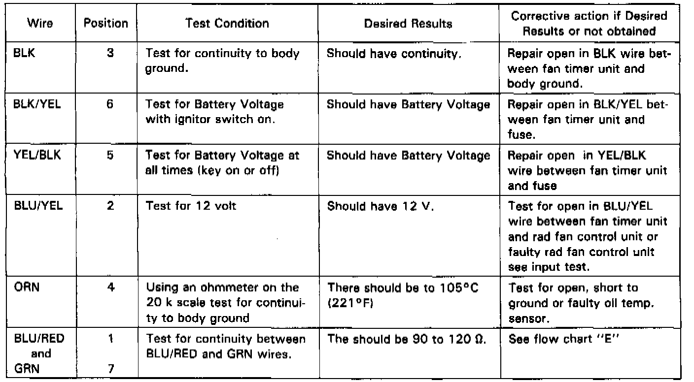
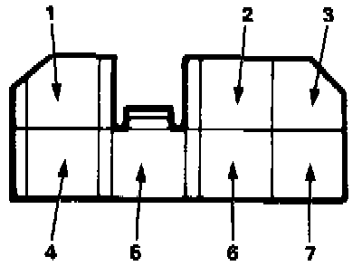

Radiator Cooling Fan Control Module: Testing and Inspection
FAN TIMER INPUT TESTNOTE: Before performing the fan timer input test do the following:
1. Check fuse No. 26 (40A), 35 (15A), 39 (20A) and 40 (20A) in the under hood relay box and fuse No. 9 (10A) and 17 (1OA) in the under dash fuse box.
2. Remove the 7P connector from the Fan timer unit and turn the ignition ON.
NOTE:
- Any abnormality found during input test must be corrected before continuing.
- If all tests produce desired result substitute a known good fan timer.

